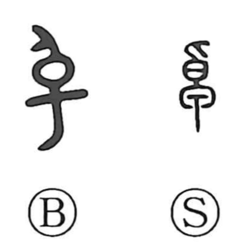

卓

Kun: | On: taku
to excel ・ outstanding ・ table
Explanation
This character pictures an oversized ladle: the upper part is shaku (勺), a scooping cup, and the lower part forms its handle (柄). From the image of a large, prominent utensil, it came to express what stands out from others—hence the senses of excelling and being superior. It also came to denote a table or stand, as seen in compounds like 卓子, 卓球, and 食卓.